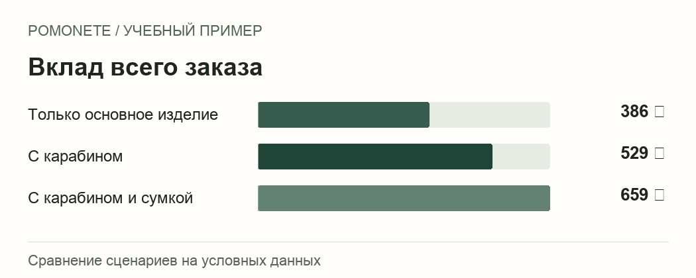

Какие товары дают вклад с общей покупки на Яндекс Маркете
Как аналитика селлера разделяет деньги по позициям нескольких товаров в одном заказе.
Заказы продавца зоотоваров на Яндекс Маркете содержат разные сочетания продуктов. Часть дополнительных продаж не тянет отдельный заказ, но выгодна в совокупной покупке. Считаем деньги по строкам товара и по операциям, которые относятся к общему отправлению.
Как избежать повторной упаковки в отчёте
Привяжите закупку и прямые удержания к каждому SKU. Стоимость общей отгрузки с упаковкой держите на родительском заказе до выбора правила распределения. Если заказ разделён на отправления, зафиксируйте фактическое количество упаковок и отдельные операции.
Чтобы пересобрать расчёт «Вклад всего заказа» для своего магазина, перенесите в него исходные числа. В формуле A обозначает «вклад главной позиции, ₽», B обозначает «вклад сопутствующих позиций, ₽», C обозначает «общая обработка заказа, ₽». Начальную величину и два направления движения фиксируют разными строками. Операция должна попадать в одно направление с корректным знаком. Запишите рядом период и охват каждого среза. Если для одной строки известна только оценка, оставьте пояснение непосредственно рядом с ней: по итоговой цифре источник уже не восстановить.
Вклад всего заказа = A + B − C
| Условие | Вклад главной позиции, ₽ | Вклад сопутствующих позиций, ₽ | Общая обработка заказа, ₽ | Вклад всего заказа |
|---|---|---|---|---|
| Только основное изделие | 520 | 0 | 134 | 386 ₽ |
| С карабином | 520 | 157 | 148 | 529 ₽ |
| С карабином и сумкой | 520 | 329 | 190 | 659 ₽ |

В сценарии «Только основное изделие» в формулу подставляем вклад главной позиции, ₽ = 520, вклад сопутствующих позиций, ₽ = 0, общая обработка заказа, ₽ = 134. Получается 386 ₽. К поводку ничего не добавлено. У обработки заказа есть отдельный расход.
В сценарии «С карабином» в формулу подставляем вклад главной позиции, ₽ = 520, вклад сопутствующих позиций, ₽ = 157, общая обработка заказа, ₽ = 148. Получается 529 ₽. Есть вторая товарная строка, а общий расход меняется не пропорционально числу позиций.
В сценарии «С карабином и сумкой» в формулу подставляем вклад главной позиции, ₽ = 520, вклад сопутствующих позиций, ₽ = 329, общая обработка заказа, ₽ = 190. Получается 659 ₽. Ещё одна позиция даёт вклад, но выросли расход упаковки и время подготовки.
Если «Только основное изделие» взять за исходную точку, «С карабином» меняет показатель «вклад всего заказа» на 143 ₽, а «С карабином и сумкой» на 273 ₽. Между двумя последними строками разница составляет 130 ₽ при вычитании второй из третьей. Смотрите, какой именно вход изменился между строками. Если менялись объём и условия одновременно, итог сравнения относится ко всему сочетанию.
При расчёте «вклад всего заказа» оставляйте исходную точность, пока складываете значения и сверяете строки. В таблице видны 386 ₽, 529 ₽ и 659 ₽, уже округлённые для чтения. При суммировании многих периодов используйте исходные данные. Например, удельные результаты с разными знаменателями нужно пересобрать из числителей и соответствующих объёмов, а затем округлить. Пометьте, где округление применяется, чтобы при передаче отчёта речь шла об одних и тех же числах.
Почему средний заказ стоит разного
Вес, объём и сложность упаковки меняются с набором товаров. Цена общего пакета может резко вырасти при добавлении громоздкой позиции. Для анализа рекомендации товаров выберите несколько типичных корзин и посмотрите результат к дате фактической доставки.
Воспроизводимость здесь начинается с критериев включения. Отметьте, чем «Только основное изделие» отличается от «С карабином и сумкой» и какие наблюдения будут отброшены в каждой строке. Как подтверждение используйте экономика заказов и собственная закупочная ведомость. У неполных записей выделите одну причину. Она покажет, какие цифры ещё стоит собирать и какой объём анализа потерян.
Выгрузка маркетплейса даёт начисления по операциям. Собственную стоимость закупки, труд и расходники подставляют из учёта магазина с датой действия. Для решения по ассортименту разделите повторяющиеся переменные расходы, затраты на запуск и текущие фиксированные расходы команды. После изменения предложения обновляются и продажи соседних изделий. Счёт по одному товару имеет смысл дополнить итогом той группы, между вариантами которой может переключиться покупатель.
Что сильнее всего меняет результат
Продолжим на базе «С карабином» (529 ₽). Разложим расчёт на отдельные входы: «вклад главной позиции, ₽», «вклад сопутствующих позиций, ₽», «общая обработка заказа, ₽». Для удобства каждый опыт меняет одну величину примерно на десятую часть. Во всех остальных полях оставляем исходные числа. Для проверки более длинного периода шаги можно подобрать по фактическим колебаниям из истории.
- «Вклад главной позиции, ₽» меняется с 520 на 572. При прежних остальных входах получается 581 ₽, сдвиг составляет 52 ₽.
- «Вклад сопутствующих позиций, ₽» меняется с 157 на 173. При прежних остальных входах получается 545 ₽, сдвиг составляет 16 ₽.
- «Общая обработка заказа, ₽» меняется с 148 на 163. При прежних остальных входах получается 514 ₽, сдвиг составляет -15 ₽.
Отметьте в рабочей таблице, что «вклад главной позиции, ₽» показал сдвиг 52 ₽. Переведите эту величину в цену решения: проверьте, достаточно ли её для смены выбранного режима. Если решение остаётся тем же, ограничьтесь контролем на очередной дате. При перевороте вывода запросите уточнение исходного значения и повторите опыт.
В отдельной строке проверьте возврат сопутствующего товара при сохранении основной продажи. Стоимость обработки может получить другую структуру. Даже небольшое изменение формата упаковки имеет смысл лишь после проверки итогового эффекта на весь заказ.
Как проверить сочетание в данных
Найдите завершённые заказы с обоими товарами, сверив фактическое число позиций и упаковок. Подпишите, какие расходы распределялись между ними и по какому правилу. Для решения о продвижении добавьте частоту общей покупки и вклад самых частых сочетаний.
Поставьте рядом плановую и фактическую строки сделки с сохранённой себестоимостью. Проверку удобнее начинать с позиций, на которые приходится основной вклад, потом выделять случаи с нестандартной логистикой, возвратом или разовой скидкой. Если после смены состава продаж средняя величина улучшилась, восстановите исходные веса и оцените, сколько прироста действительно получилось на сопоставимых позициях.
Чтобы отделить ошибку оценки от реального изменения, после следующего отчёта соберите «вклад всего заказа» дважды. Сначала используйте исходное правило, затем замените только один предположенный вход фактическим. Так аналитика селлера Яндекс Маркета покажет, стоит ли тратить время на повторный замер или менять рабочую операцию. В итоговом отчёте сохраните обе даты проверки.